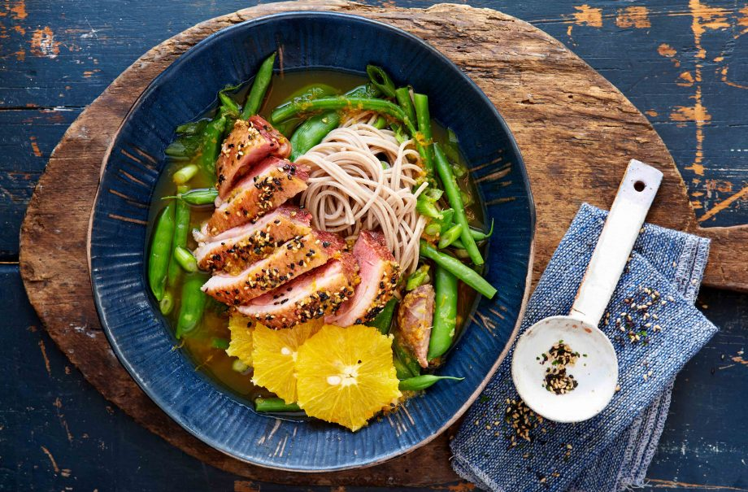

Duck ramen with ginger and citrus recipe

Serves:
Cost:
Prep:
Cooking:
Skill:
4
Cheap
45 Min
3 Min
Medium
This tangy duck ramen noodle dish is packed with healthy vegetables and citrusy fresh ginger.
Just marinate the duck breast in soy sauce, brush with honey and sesame seeds before roasting for 15-20 minutes. Boil the noodles according to the packets instructions and add in the onion, ginger, green beans and sugar snaps for 3 minutes before adding yuzu juice. Don’t forget to garnish with shredded duck and peeled orange slices before serving in a large bowl. This is one of those dishes that is delicious if made for a packed lunch too, so you would make double to see you through the following day.
Ingredients
- 1 onion, peeled and diced
- 2tbsp Japanese furikake seasoning or sesame seeds
- 1tbsp root ginger, grated
- 200g green beans, trimmed
- 3tbsp yuzu or grapefruit juice
- 3 oranges, peel and pith removed, sliced
Method
- Put the soy sauce into a shallow dish, then add the duck breasts, fat-side up. Pat the fat dry with kitchen paper. Leave to marinate for 30 mins.
- Heat the oven to 220°C or Gas Mark 7. Arrange the duck breasts on a rack over a roasting tin, brush with the honey and sprinkle with the furikake or sesame seeds. Roast for 15-20 mins, until duck is just cooked through and the skin crispy.
- Bring a large pan of water to the boil and add the noodles. Cook according to pack instructions, then drain.
- Put the leftover marinade into a pan, add the ginger, onion and stock and bring to the boil. Add the green beans and sugar-snaps and cook for 3 mins.
- Tip in the noodles and yuzu or grapefruit juice, to warm through.
- Slice the duck. Divide the noodles, stock and vegetables between the bowls. Top with the sliced duck and oranges.